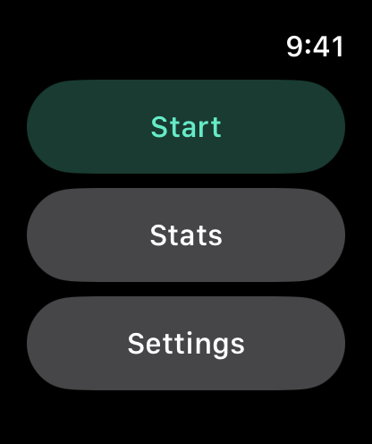
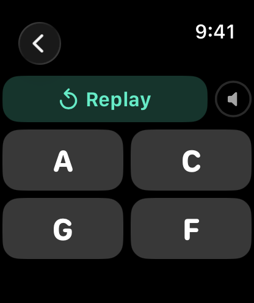
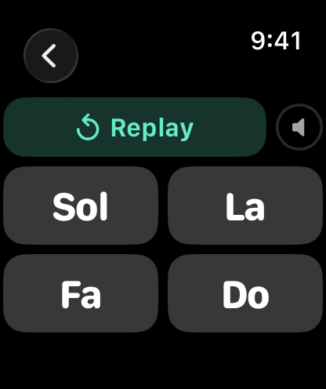
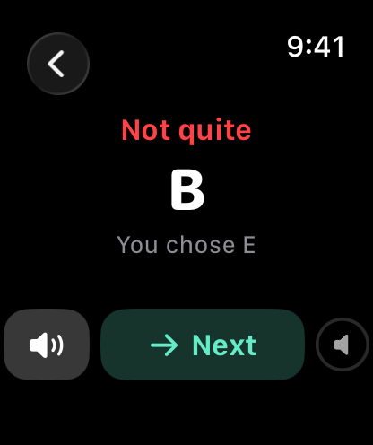
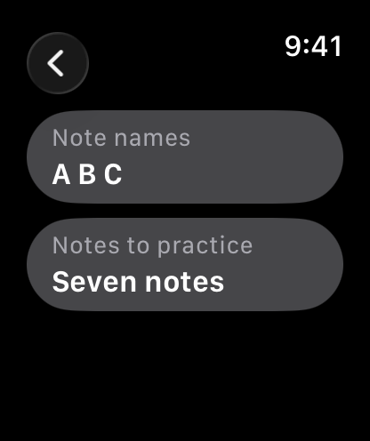
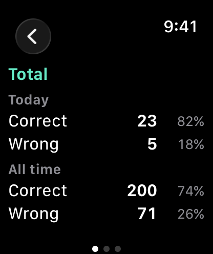

Doremi Teacher Watch Special
Ear training on your wrist. A note plays, you pick its name from four. Choose Do Re Mi or A B C, practice the seven natural notes or add sharps and flats. Play a saz or another transposing instrument? Tell the app what your Re sounds like and every name follows. No iPhone needed.
Requires watchOS 8 or later.
Download


Support
Have a question, found a bug, or need help with the app? Reach out. We read every message.
Before you write
A few quick things to try first:
- App not responding? Double-press the Digital Crown to see open apps, then swipe the Doremi Teacher card up to close it. Reopen from your app list.
- No sound? Turn the Digital Crown on a practice screen to raise the volume. Sound plays through the watch speaker or connected Bluetooth headphones.
- Notes are too quiet on the wrist? Bluetooth headphones are much clearer than the watch speaker, especially in a noisy room.
- The names look wrong for your instrument? Open Settings → Names follow and check whether it is set to Standard or My instrument. Under My instrument, check the note your Re is set to sound like.
- Expected Do Re Mi but see A B C? Open Settings → Note names and switch it.
Frequently Asked Questions
- Does it work without my iPhone?
Yes, fully standalone. There is no iPhone app at all. - Is there a timer?
No. Replay the note as often as you like before answering. Every round ends with the right answer and a button to hear it again. - What does "My instrument" do?
Some instruments name their notes differently from concert pitch. On many saz tunings, the string called Re actually sounds E. Set My Re sounds like E and every name shifts with it: Do sounds D, Mi sounds F♯, and so on. The app then plays the sounds your instrument would make for those names. - Can I use My instrument with A B C names?
No. A B C always means concert pitch. Instrument naming is available with Do Re Mi names only. - How are sharps and flats spelled?
The conventional songbook spelling: C♯, E♭, F♯, G♯, B♭. Feedback may show the other name of the same note. - Which octave do the notes play in?
Around the fifth octave (C5 to B5), which is the range that carries best on the watch speaker. Octaves are not graded, only the note name. - What counts in Stats?
Only completed rounds. Replays and rounds you leave before answering do not count. - Does it remember my settings?
Yes. Note names, instrument mapping and the note set are restored when you reopen the app. - Does it collect any data?
No data is collected or shared. Settings and practice counts stay on the watch.
Manual






A round
- Tap Start. A note plays right away.
- Tap Replay as many times as you need.
- Tap one of the four names to answer.
- The result shows Correct or Not quite, the right name, and what you chose. Tap the speaker button to hear the note again.
- Tap Next for a new note.
Settings
- Note names: Do Re Mi or A B C.
- Names follow: Standard (Do is C, Re is D, and so on) or My instrument.
- My instrument: pick the note your reference name sounds like with the < and > buttons. The default reference is Re. A preview under the picker lists every name and the note it will sound as.
- Notes to practice: Seven notes (the seven unaltered names) or With sharps/flats (all twelve).
Under Names follow → My instrument, Seven notes means the seven unaltered names in your instrument's naming, not the piano's white keys. Here is how each name sounds under Standard and under My instrument with Re set to sound like E. Every name moves up by the same two semitones:
| Name | Standard | My instrument (Re sounds like E) |
|---|---|---|
| Do | C | D |
| Re | D | E |
| Mi | E | F♯ |
| Fa | F | G |
| Sol | G | A |
| La | A | B |
| Si | B | C♯ |
Stats
Stats keep correct and wrong counts for Today and All time, each with a percentage. Swipe sideways between three pages: Total, Seven notes and With sharps/flats.
Legal
Privacy Policy
Last Updated: September 2026
Introduction
Welcome to Doremi Teacher Watch Special. We are committed to respecting and protecting your privacy. This Privacy Policy outlines the type of information we collect, or in this case, do not collect, and the methods we use to ensure your privacy.
Information We Do Not Collect
Doremi Teacher Watch Special is designed on a principle of zero data collection. We do not collect, store, use, share, or transfer any personal data from our users. The app operates entirely on your Apple Watch with no data processed or stored on any server.
The app keeps two things on your watch: your settings (note names, instrument mapping, note set) and your practice counts (correct and wrong answers for today and all time). They are stored only on the watch, are never sent anywhere, and are deleted when you remove the app.
The app has no network access, no microphone access, no user accounts, no analytics, no advertising, and no third-party code.
Third-Party Services
Doremi Teacher Watch Special does not integrate with any third-party services, such as analytics tools, advertising networks, or social media platforms. No data is shared with any third party.
Children's Privacy
Since we do not collect any data, we comply with all relevant regulations related to children's privacy, such as the Children's Online Privacy Protection Act (COPPA).
Changes to This Privacy Policy
We may update our Privacy Policy from time to time. We advise you to review this page periodically for any changes. Changes are effective immediately after they are posted on this page.
Contact Us
If you have any questions or suggestions about our Privacy Policy, do not hesitate to contact us at: support [at] hoshinosoftware [dot] com